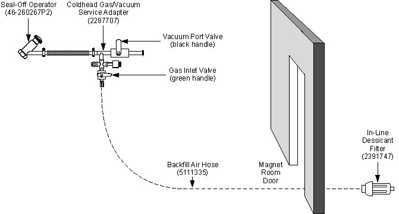

Do not loosen the plugs in either end of the In-Line Desiccant Filter.
Re-plug the filter immediately after use to prevent filter contamination between uses.
Illustration 49: Air Backfill Connections
